1.球桌
我們是參考火球國際公開賽桌球場的規格做基準，基本上對尺寸做了一點微調，增加為了讓回球機構能運作的平面。
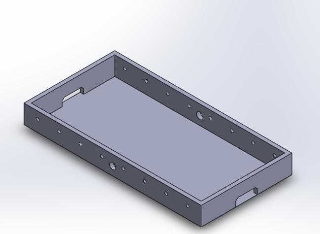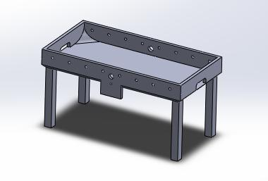
2.球員
外型依照老師提供的造型作為使用，我們將孔洞放大便於組合與安裝。
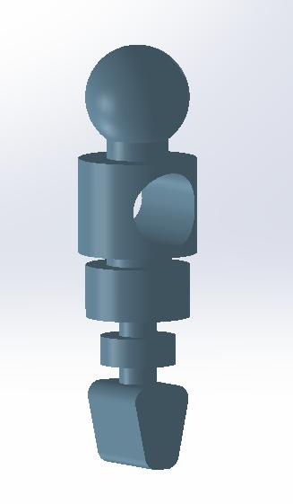
3.球桿
參考火球國際公開賽桌將球桿分為一、二、三、五人，桿上突起部位為安裝球員處。
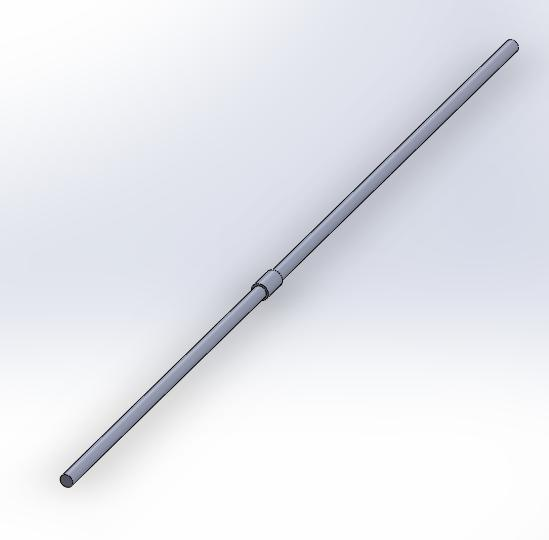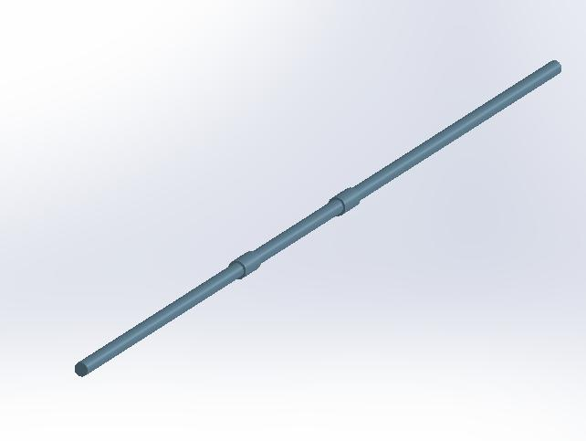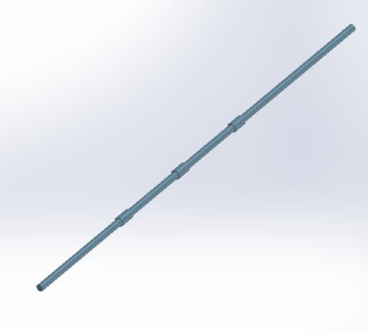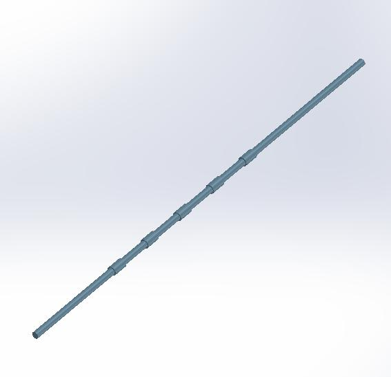
4.圓盤
這是剛開始使用的回球機構的圓盤。
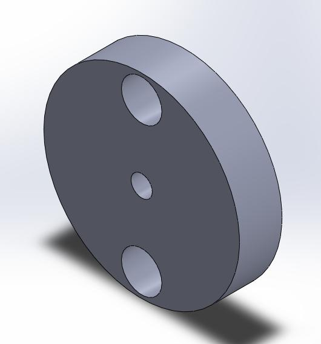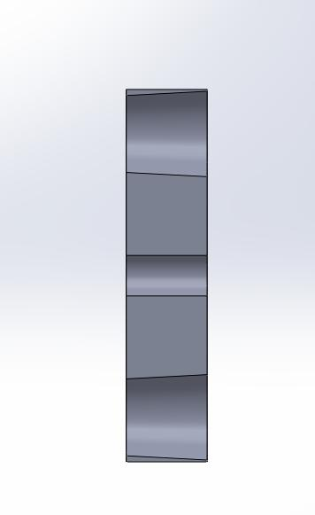
因為球會卡在球道末端而修改了錐形孔的圓心位置和圓盤大小及厚度。
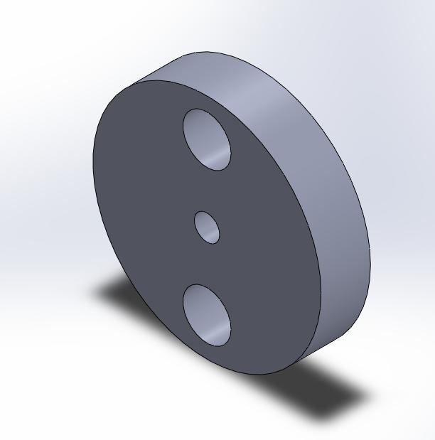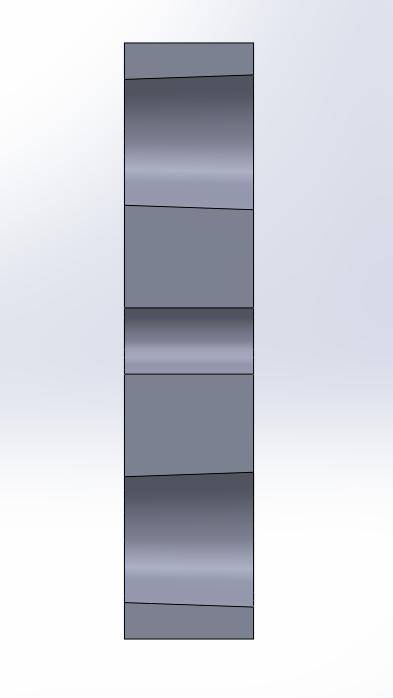
5.握把
依照火球國際公開賽桌的握把去抓尺寸而繪製的樣子。
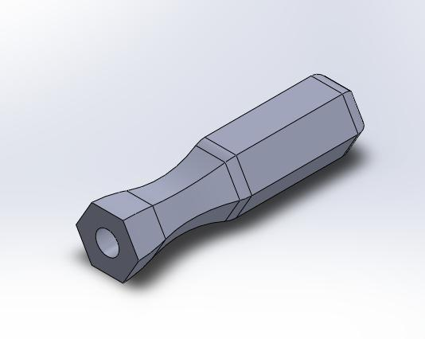
6.球道
剛開始設計出來的球道模型。
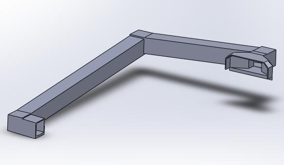
球道的入口處因球道入口處太小，有機會進不了入口或彈出，因為入口處地板是平面所以球有機會停在此處。
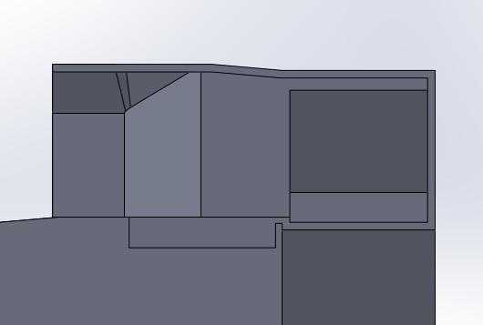
出口處平面部分過長，球有機會停置於此處。
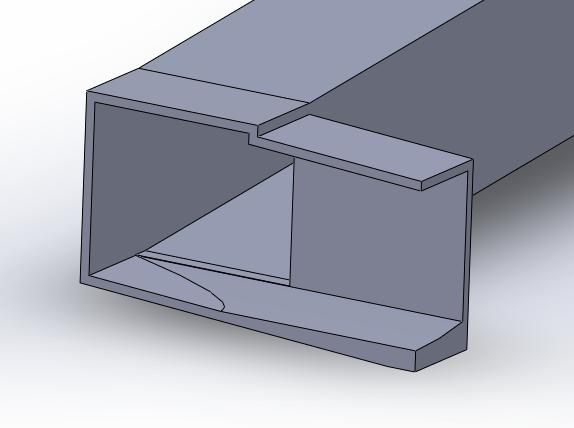
修改後的整體圖
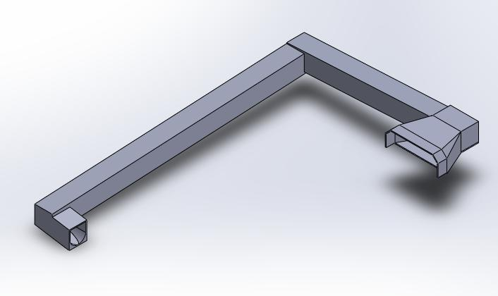
修改後的入口處地板採用斜面、且入口增大，解決了入口卡球的問題。
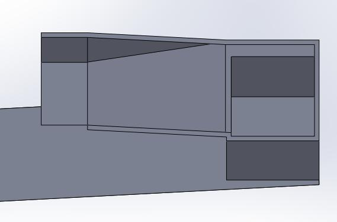
出口修改為斜面到底，且增加圓弧面更容易讓球滾入圓盤。
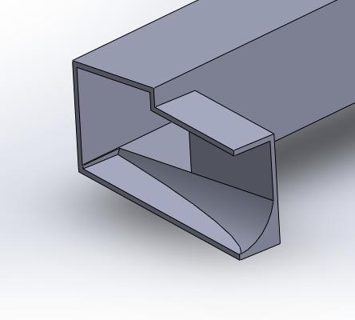